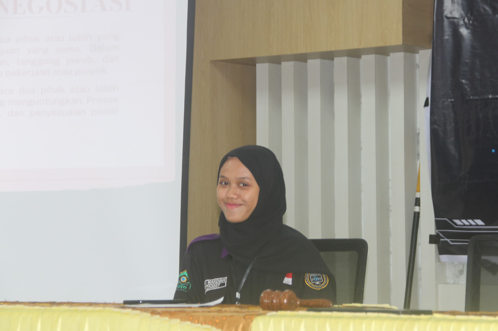
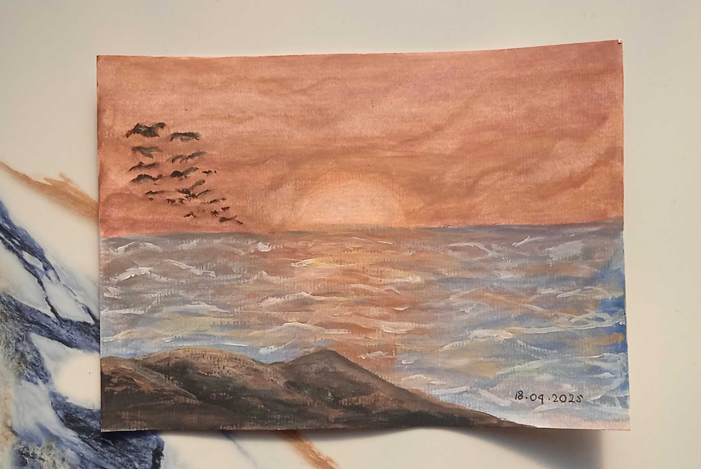
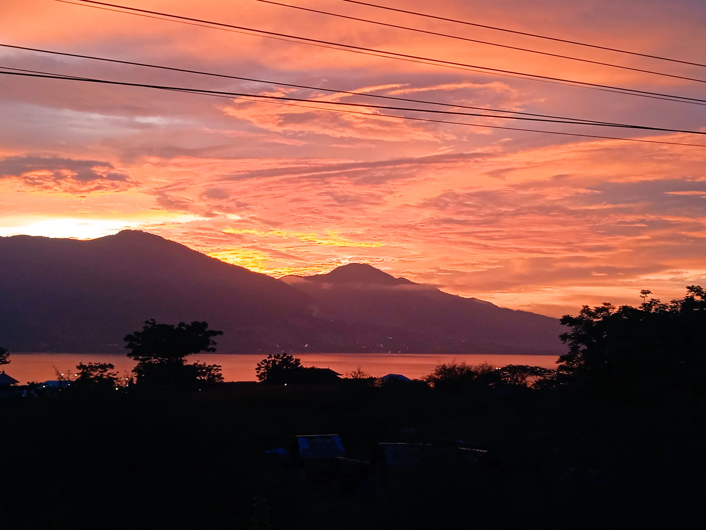
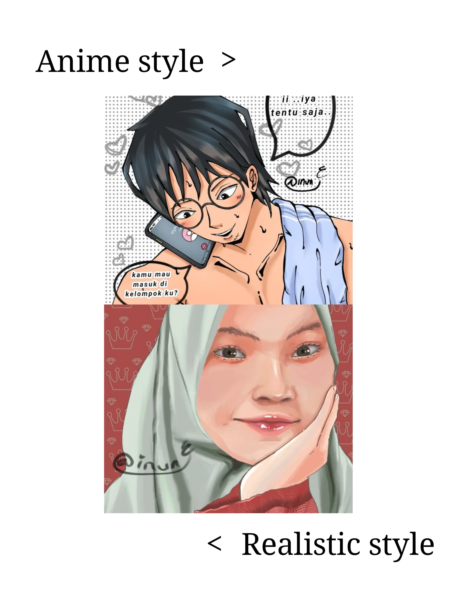

Saya menawarkan jasa melukis menggunakan cat air untuk menciptakan karya seni yang unik dan personal. Dengan sentuhan lembut dan warna-warna yang indah, lukisan cat air akan menjadi kenangan abadi atau hadiah istimewa. Pesan lukisan custom Anda sekarang!"
Read MoreMengabadikan momen adalah seni, dan saya hadir untuk mewujudkannya dengan visi dan keahlian profesional. Dengan pengalaman bertahun-tahun di balik lensa, saya menawarkan layanan fotografi yang menangkap esensi setiap subjek dan peristiwa dengan detail yang tak terlupakan. Saya percaya bahwa setiap gambar memiliki cerita, dan saya berdedikasi untuk menceritakan kisah Anda melalui visual yang kuat dan artistik. Percayakan momen berharga Anda kepada saya, dan mari kita ciptakan kenangan abadi dalam bingkai yang sempurna.
Read More

Solusi digital kreatif yang dirancang untuk memberdayakan seniman dengan menyediakan platformkreatif canggih dan serbaguna. Aplikasi ini mengintegrasikan alat desain mutakhir dengan antarmuka intuitif, memungkinkan seniman untuk mengoptimalkan proses kreatif mereka, berkolaborasi lebih efektif, dan mewujudkan visi artistik dengan lebih mudah dan fleksibel. Dengan memahami alur kerja unik para profesional kreatif, aplikasi ini menawarkan ruang kerja digital yang disesuaikan untuk mendukung inovasi artistik.
Read More